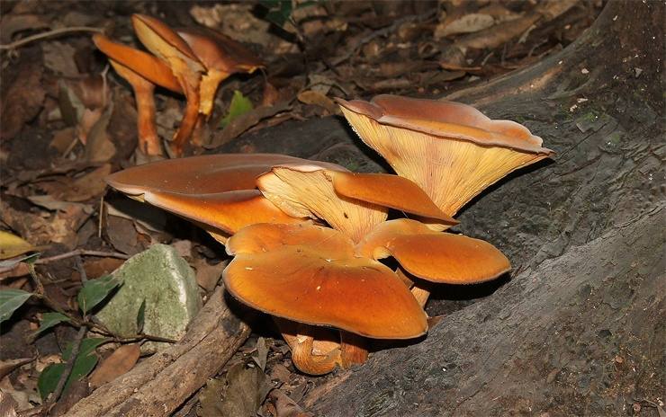
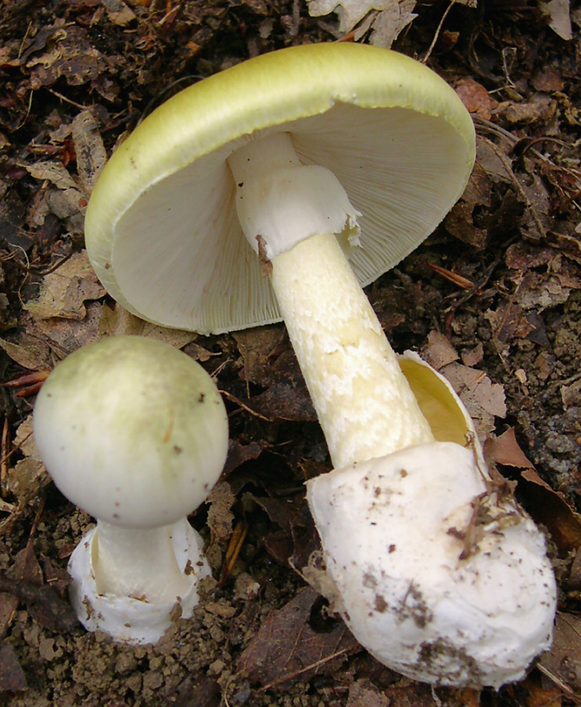
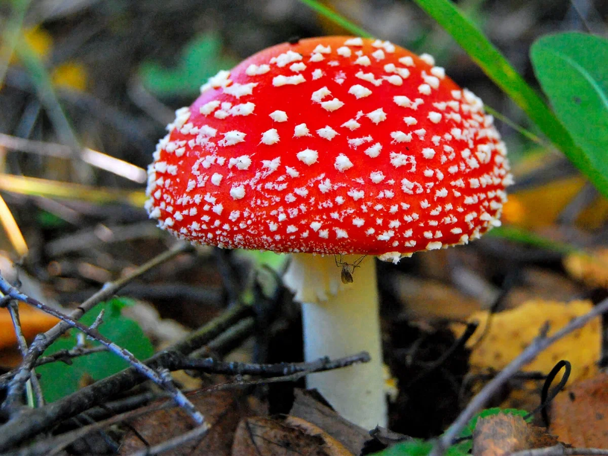
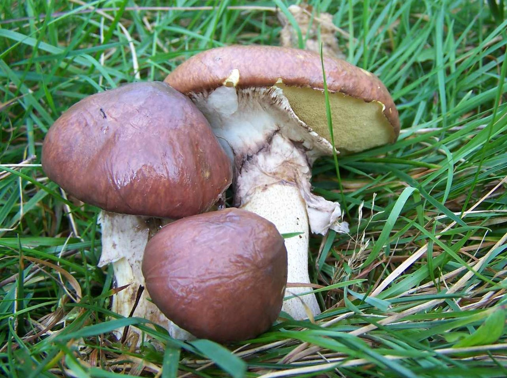
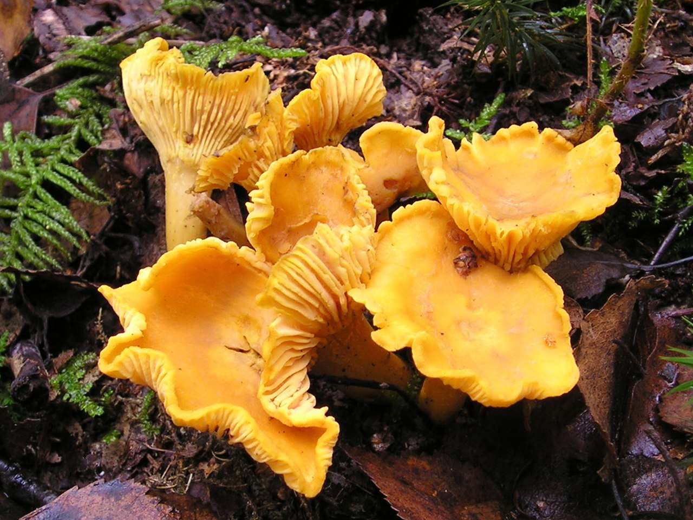
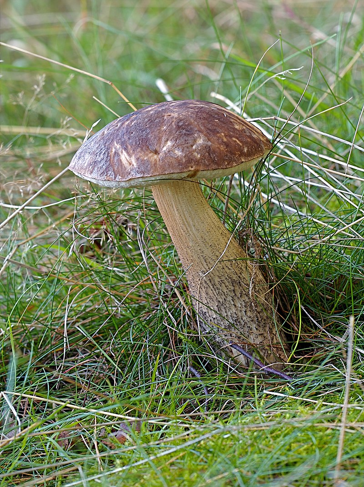

| Белый гриб |
Белый гриб – самый благородный, желанный трофей всех «тихих охотников». Если удалось его найти, считай, сбор грибов прошел удачно. И не зря – ведь белый гриб не только красив, ароматен и вкусен, но также богат витаминами, минералами и другими полезными веществами. |
 |
| Омфалот маслиновый |
Омфалот маслиновый - ядовитый гриб, произрастающий в лесистой местности на трухлявых пнях, гнилых стволах лиственных пород деревьев в Европе, преимущественно в Крыму. Примечателен своими биолюминесценции свойствами. Внешним видом напоминает лисичку, однако в отличие от неё омфалот маслиновый имеет неприятный запах и содержит токсин illudin S, который при попадании в организм человека приводит к очень сильной боли, приступам рвоты |
 |
| Бле́дная пога́нка |
Бле́дная пога́нка, также мухомо́р зелёный смертельно ядовитый гриб из рода Мухоморов. Широко распространена в Европе, а также распространяется и в других частях света. A формирует эктомикоризу с различными широколиственными деревьями. Наиболее ядовитый среди грибов; является причиной около 90% смертных случаев, вызванных употреблением в пищу ядовитых грибов |
 |
| Мухомор |
Мухоморы - род пластинчатых грибов, которые считаются одними из самых ядовитых. При этом они не лишены полезных свойств, и иногда их используют как лечебное средство. Обычно они имеют красную или оранжевую шляпку, покрытую белыми бляшками. Характерная внешность делает случайную и тяжелую интоксикацию очень редкой. Но у некоторых видов цвет шляпки варьируется от зеленого до коричневого и не имеет белых точек, иногда мухоморы можно ошибочно принять за съедобные виды. |
 |
| Маслёнок обыкновенный |
Диаметр шляпки составляет 3—14 см, шляпка имеет полушаровидную, позже округло-выпуклую, плосковыпуклую или подушковидную, или даже плоскую форму, иногда бугорчатая с поднятым краем, на ощупь гладкая, слизистая, цвет кожицы — коричневый, тёмно-коричневый, шоколадно-коричневый, красно-коричневый, красно-бурый, жёлто-коричневый, жёлто-бурый, серо-бурый или буро-оливковый. Кожица легко отделяется от мякоти, имеет радиально-волокнистое строение, сильно слизистая. |
 |
| Лисичка |
Лиси́чка обыкнове́нная, или лисичка настоя́щая, или петушо́к — вид грибов семейства лисичковых. Растет в Европе от Скандинавии до Средиземноморского бассейна, в основном в лиственных и хвойных лесах. Гриб легко обнаружить и распознать в природе. Обычно в Европе употребляемую в пищу лисичку собирают с конца лета до поздней осени. Лисички имеют слабый аромат и вкус абрикосов. Они используются во многих кулинарных блюдах и могут сохраняться путём сушки или заморозки. При сушке не следует использовать духовку, потому что гриб может стать горьким. |
 |
| Подберёзовик |
Подберёзовик — общее название для группы видов грибов рода Лекцинум, ранее относимых к одному виду Boletus scaber. Отличаются неяркой, коричневых оттенков окраской шляпки, мякоть на срезе не всегда окрашивается. От подосиновиков также отличаются обычно более тонкой ножкой и менее плотной мякотью шляпки. |
 |